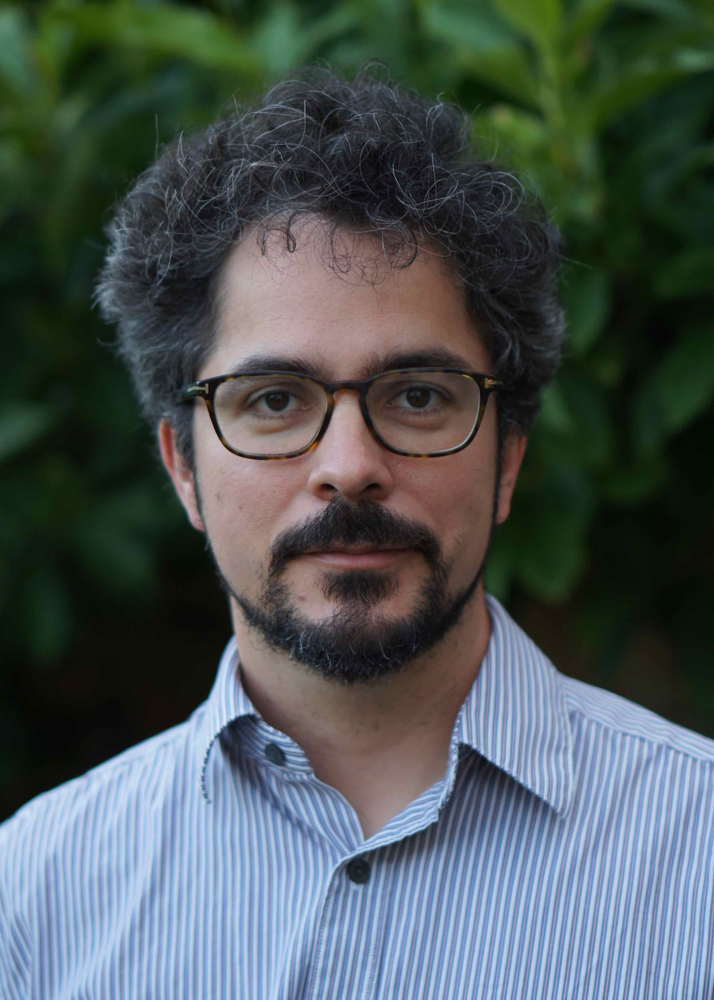

László Végh
Professor
|
 |
News
| March 2024 | After 12 fantastic years at LSE, I am moving to the University of Bonn from August 2024, taking up a new Hertz Chair positions in the Transdisciplinary Research Area in Modelling. I am looking for postdocs and PhD students. Topics are broadly on fundamental questions at the crossroads of mathematical optimization, theoretical computer science, mathematical economics, and game theory. The application deadline is 5 April for both positions. |
| September 2023 | I am welcoming Haoyuan Ma as a new PhD student. |
| July 2023 | Our paper A Constant-Factor Approximation Algorithm for the Asymmetric Traveling Salesman Problem with Ola Svensson and Jakub Tarnawski received a Frontiers of Science Award at the International Congress of Basic Science. | January 2023 | I am giving a minicourse on Linear programming: the quest for strongly polynomial algorithms at the XVIII Summer School in Discrete Mathematics in Valparaíso. | November 2022 | Congratulations to Dr Cedric Koh on successfully passing his PhD viva! Cedric is now a postdoc at CWI Amsterdam. | September 2022 | Congratulations to Dr Bento Natura on successfully passing his PhD viva! | September 2022 | We are welcoming Sharat Ibrahimpur as a new postdoc! | January 2022 | We are welcoming Christoph Hertrich, a new postdoc in the group! | November 2021 | Congratulations to Dr Edin Husić on successfully passing his PhD viva! | June 2021 | Our paper with Jugal Garg and Edin Husić on approximating Nash Social Welfare is featured in the Sigecom Exchanges. |
| Apr 2021 | A new postdoc position is open in the ScaleOpt project, with application deadline 5th June 2021. Please see the details here. |
| Apr 2021 | I am giving a minicourse on Linear programming and circuit imbalances at the IPCO 2021 summer school. |
| Oct 2020 | We are welcoming Yixin Tao as a new postdoc. |
| September 2020 | I am co-organising a Hausdorff Trimester Program in Discrete Optimization in Autumn 2021, together with Daniel Dadush, Jesper Nederlof, Neil Olver and Laura Sanità. Please get in touch with us if you are interested in participating! | August 2020 | Promotion to full professor. |
| April 2020 | I joined the editorial board of Networks. |
| March 2020 | It was a great honour to interview Ailsa Land for the INFORMS History of O.R. Excellence archive. See the biographical profile and the interview. |
| Dec 2019 | A new postdoc position is open in the ScaleOpt project, with application deadline 24th January 2020. |
| Feb 2019 | I am the PC chair of APPROX 2019. Please consider submitting. The call for paper can be found on the new website approxconference.wordpress.com. |
| 1 Feb 2019 | We are welcoming Georg Loho who joined as a postdoc. |
| Jan 2019 | I joined the editorial board of Mathematics of Operations Research. |
| 24 Sep 2018 | I am welcoming two new PhD students, Zhuan Khye (Cedric) Koh from Waterloo, and Bento Natura from Bonn. |
| 18 Sep 2018 | Our new paper with Jugal Garg on a strongly polynomial algorithm for linear exchange markets is online. |
| Sep 2018 | The recordings of a two hour board talk I gave on ATSP at the Hausdorff institute are available online: Part I, Part II. |
| Aug 2018 | The lecture notes of my minicourse at the Hausdorff School on Combinatorial Optimization can be accessed here. |
| June 2018 | Our ATSP paper with Ola Svensson and Jakub Tarnawski received the Best Paper Award at STOC 2018. |
| March 2018 | I joined the editorial board of Operations Research. |
| Jan 2018 | I joined the editorial board of Mathematical Programming Series A. |
| 1 Dec 2017 | I will give a mini-course on strongly polynomial algorithms and generalized flows at the Hausdorff School on Combinatorial Optimization in Bonn between 20-24 August 2018. |
| 24 Aug 2017 | My research will be funded by an ERC Starting Grant for 5 years. I am looking for PhD students and postdocs. See more details on the project webpage, and email me if you are interested. |
| 16 Aug 2017 | I am in the Simons Institute in Berkeley for two months participating the semester program Bridging Continuous and Discrete Optimization. |
| 14 Aug 2017 | Our paper with Ola Svensson and Jakub Tarnawski giving a constant factor approximation algorithm for ATSP is posted on arXiv. |
| 1 Aug 2017 | Promotion to Associate Professor. |
PhD students
Haoyuan Ma 2023–Johannes Brustle 2020–, co-supervised with with Paul Dütting
Zhuan Khye (Cedric) Koh 2018–2022, currently postdoc at CWI, Amsterdam
Bento Natura 2018–2022, currently postdoc at Georgia Tech
Edin Husić 2017–2021, currently postdoc at IDSIA, Switzerland
Postdocs
Sharat Ibrahimpur 2022–2023
Christoph Hertrich 2022–2023, currently postdoc at Université Libre de Bruxelles.
Yixin Tao 2020–2023, currently assistant professor at the Shanghai University of Finance and Economics.
Georg Loho 2019–2020, currently assistant professor at the University of Twente.
Journal editorial boards
I am an associate editor of Mathematics of Operations Research, Operations Research, Mathematical Programming Ser A, and Discrete Optimization. I was an associate editor of Networks 2020–2022.
STOC 2024
Past: SODA2023,
HALG2022, FOCS2021,
ICALP2021,
IPCO2021,
ISAAC2020,
MFCS2020,
IPCO2020,
APPROX2019 (PC chair),
EC2019,
SODA2019, WADS2019,
EC2018,
WINE2017,
ICALP2017,
WINE2016,
EC2016,
WADS2015,
SODA2015,
ESA2014,
FSTTCS2013,
EC2013,
TAMC2013
Email: L.Vegh@lse.ac.uk
Phone: +44 (0) 20 7955 7591
Office: COL 2.02
Conference Programme Committees
Contact information